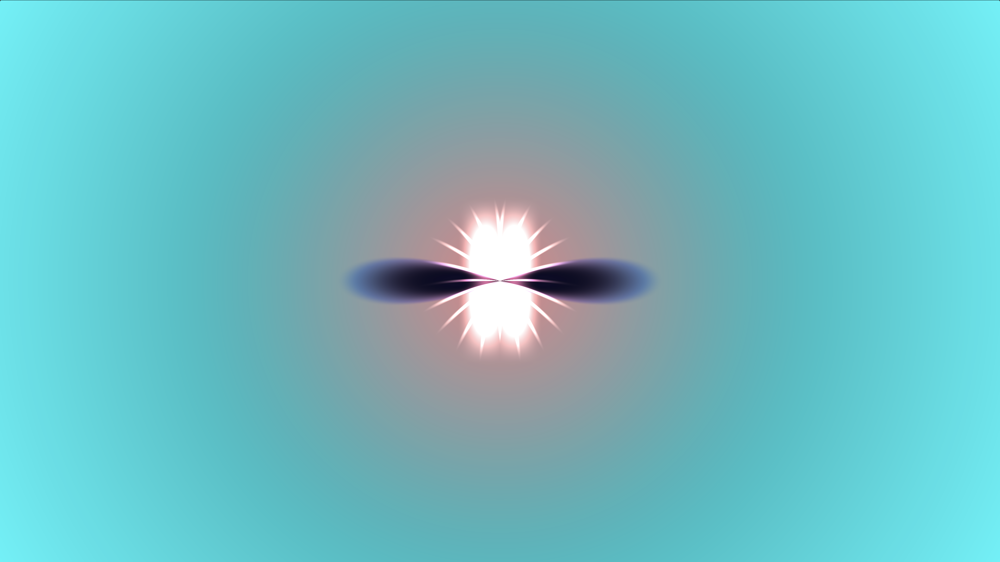

In this exploration of shader graphics, I primarily used Shadertoy to create visual compositions. I chose
flowers and butterflies as the theme for this project because both elements exhibit symmetrical patterns,
making them suitable for learning the basics of shader programming. These highly repetitive shapes can often
be managed using trigonometric functions like sin and cos, as their corresponding pixels can be viewed as
cyclically arranged along the coordinate axis.
Another function I frequently used in this project is smoothstep, which is often employed to achieve
smooth interpolation. For instance, it can smoothly transition color values during shader calculations,
creating gradient effects, or be applied to shapes in a similar way. In most of the displayed graphics,
smoothstep was used to generate oval shapes. Additionally, I experimented with iTime to create several
dynamic butterfly animations.
I also explored the Shadertoy community and came across some inspiring works, such as Philippe
Desgranges’ sakura (cherry blossom) creation. I iterated on his original work, modifying it to create a
beautiful effect of falling flower petals.